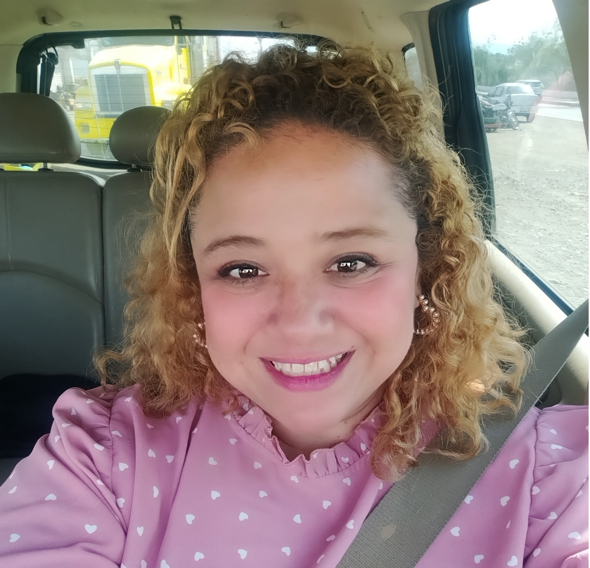

Hola
Un poco sobre mi
Docente y programador web entusiasta y proactiva, interesada en la mejora y capacitación continua. Mi meta es formar parte de una organización que me permita aprender las nuevas tecnologías y metodologías de desarrollo para mejorar la calidad de los productos de software.